Locații de nuntă în județul Vrancea
- locații în director
- 31
- cu cazare în registrul SITUR
- 3
- medie ponderată Google
- 4,6 / 5
- evaluări Google
- 5.626
Cum alegi unde mergi la vizionare
Dacă vă doriți o petrecere în zona viticolă, puteți porni de la Odobești și compara adrese din Golești sau Beciu. Cereți operatorului să delimiteze terenul accesibil invitaților. Un rând de viță folosit pentru fotografii și spațiul rezervabil pentru mese pot avea condiții diferite.
La Casa de Vinuri Beciu, un client își amintește o degustare făcută când a ales vinuri pentru eveniment. O astfel de experiență vă poate ajuta și dacă vă țineți nunta la altă proprietate. Dacă vreți ceremonia chiar la cramă, întrebați separat cât teren intră în rezervare, dacă se opresc vizitele obișnuite și unde poate sta grupul în timpul fotografiilor.
Două adrese pentru o zi de vizionări
Pe hartă, între aceste două proprietăți sunt 4,4 km în linie dreaptă. Deschide indicațiile de drum din fișe ca să vezi traseul pe șosea înainte de a stabili a doua întâlnire.
- Conac Râmniceanca Vîrteșcoiu, Vrancea · DJ205B 1, Râmniceanca
- Crama Odobesti S.C. Beciul Domnesc S.A. · Strada Nicolae Iorga 1, 625300 Odobești
Explorează după localitate
- Beciu o locație
- Bordești o locație
- Dumbrăveni o locație
- Focșani 4 locații
- Golești o locație
- Goleștii de Sus o locație
- Jariștea 2 locații
- Movilița o locație
- Neculele o locație
- Neicu o locație
- Odobești 2 locații
- Panciu o locație
- Păunești o locație
- Râmniceanca o locație
- Sârbi 2 locații
- Soveja o locație
- Spulber o locație
- Străoane 2 locații
- Vărsătura o locație
- Vârteșcoiu o locație
- Vităneștii de sub Măgură o locație
- Vulcăneasa o locație
Toate locațiile din județul Vrancea
Ordinea ține cont de nota Google și de numărul evaluărilor. Cum calculăm ordinea
Fotografie a locației · Sursa fotografiei Zona Dumbrăveni · Cramă
Crama Gîrboiu
Cramă de familie pe Dealul Cramelor din Vrancea, cu degustări și picnicuri în vie; nota 4,9 din 169 de evaluări, iar site-ul pomenește nunți.
Dealul Cramelor 43, 627108+40 237 232 079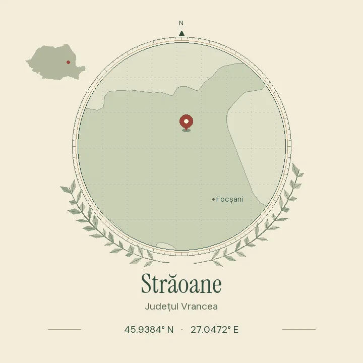
Hartă ilustrată Străoane · Cramă
MOȘIA DOMNEASCĂ
MOȘIA DOMNEASCĂ. Este un reper bun dacă vrei vinuri din Vrancea pentru masă, dar acea cumpărătură nu stabilește unde se poate ține petrecerea.
DN2L, 627325 Străoane+40 747 233 030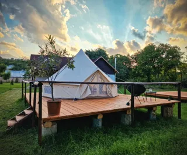
Fotografie a locației · Sursa fotografiei Spulber · Pensiune
Pensiunea Cocoș
Pensiunea Cocoș. La Cocoș din Spulber, oaspeții care au închiriat căsuța rustică au observat și trei corturi de glamping cu bucătărie și baie separate.
Fundătura Viorelelor 5, 627247 Spulber+40 787 370 052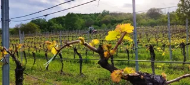
Fotografie a locației · Sursa fotografiei Bordești · Cramă
Vinul Vrancei
Vinul Vrancei. La Bordești, imaginea de referință arată felul în care sunt dispuse rândurile de viță pe spalieri, nu o zonă amenajată cu mese.
Strada Podgoriilor 35, 627045 Bordești+40 766 629 503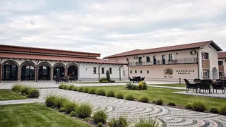
Fotografie a locației · Sursa fotografiei Sârbi · Hotel
Domeniile Panciu Winery and Resort
Domeniile Panciu Winery and Resort, Sârbi. Pentru o vizită în Sârbi, folosiți ca reper curtea pavată și intrarea cu arcade.
Domeniile Panciu, 627382 Sârbi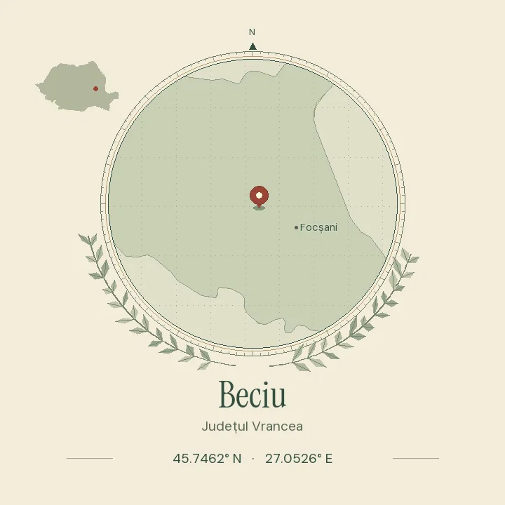
Hartă ilustrată Beciu · Cramă
Casa de Vinuri Beciu - Crama
Cramă din Beciu, Vrancea, de la care cuplurile își iau vinul de nuntă după o degustare cu oenologul. 4,8 din 37 de evaluări pe Google.
627406 Beciu+40 770 559 201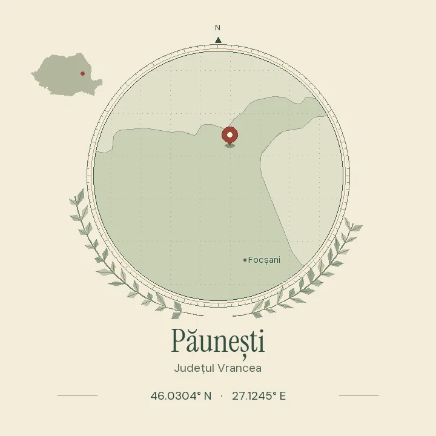
Hartă ilustrată Păunești · Cramă
Crama Nobless
Cramă de familie la Păunești, Vrancea, cu nota 5 din 12 evaluări și vin lăudat pentru preț. Ce să întrebi despre degustări de grup și vinul de nuntă.
627260 Păunești+40 765 215 630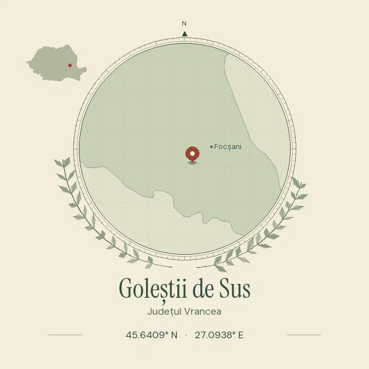
Hartă ilustrată Goleștii de Sus · Cramă
Crama Străveche
Cramă mică în Goleștii de Sus, Vrancea, cu degustări lăudate și vin natural; 4,9 din 12 evaluări, fără date despre evenimente.
627102 Goleştii de Sus+40 727 269 085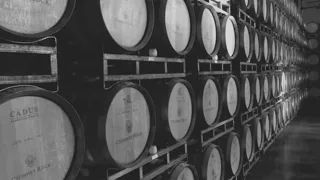
Fotografie a locației · Sursa fotografiei Zona Odobești · Cramă
Cramele Odobești
La Cramele Odobești există măcar un răspuns din experiența unui vizitator la întrebarea „putem gusta vinurile chiar aici?”.
DN2D+40 788 237 001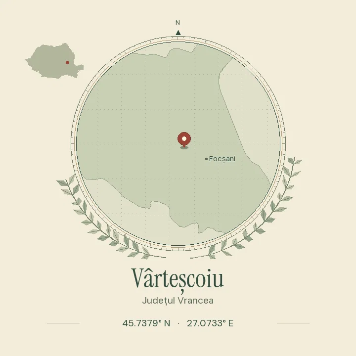
Hartă ilustrată Vârteșcoiu · Cramă
TeraVin
TeraVin, Vârteșcoiu. În 2013, un călător care se îndrepta spre Lepșa a oprit puțin la cramă, a apreciat primirea și a recomandat Feteasca Albă.
DJ205C1, 627405 Vârteșcoiu+40 745 006 953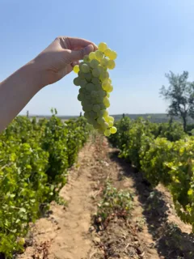
Fotografie a locației · Sursa fotografiei Neicu · Cramă
Struguri de Vanzare Vrancea - Podgoria Neicu
Struguri de Vanzare Vrancea - Podgoria Neicu. Numele de pe hartă descrie în primul rând vânzarea de struguri în Podgoria Neicu, cu adresă pe Strada Putnei.
Strada Putnei 20, 625400 Neicu+40 770 848 142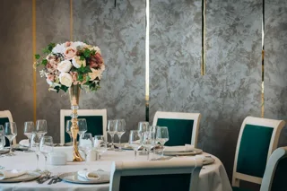
Fotografie a locației · Sursa fotografiei Golești · Pensiune
Casa Budisteanu
Pensiune cu sală pentru 200 de persoane, terasă de 40 de locuri și camere mari în Golești. Ce spun oaspeții și ce să verificați la nuntă.
Strada Pășunii 3, 627150 Golești+40 722 874 375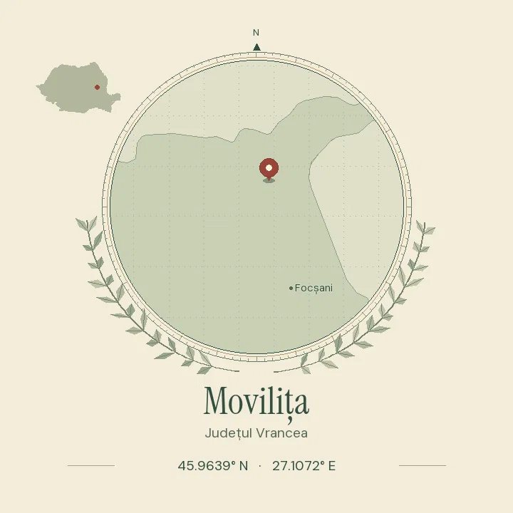
Hartă ilustrată Movilița · Cramă
Casa de vinuri Drilea
Casa de vinuri Drilea, Movilița. Un client a apreciat vinurile și serviciile Casei de vinuri Drilea din Movilița.
Strada Moviliței, 627210 Movilița+40 725 382 281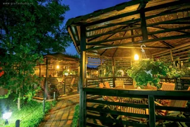
Fotografie a locației · Sursa fotografiei Focșani · Cazare în regim hotelier
Pensiunea Oscar
Pensiunea Oscar. Un oaspete ajuns la Oscar dinspre A7 amintește parcarea interioară și apartamentul în care a stat, cu un spațiu asemănător unei terase închise.
Strada Comisia Centrală 1A, 620165 Focșani+40 237 231 264Fotografie a locației · Sursa fotografiei Focșani · Bed & Breakfast
Pensiunea Rix Rooms
Pensiunea Rix Rooms, Focșani. O vizitatoare din Focșani vorbește despre camera spațioasă de la Rix Rooms și despre micul dejun variat.
Strada Republicii 16, Focșani+40 727 740 740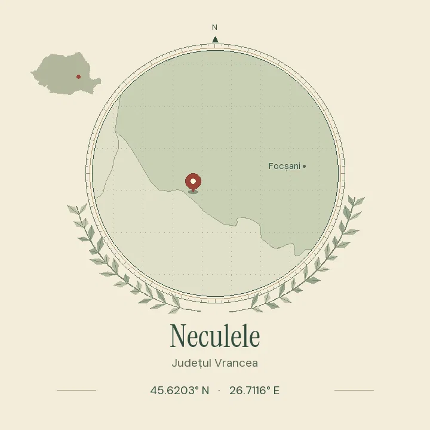
Hartă ilustrată Neculele · Grădină
Conacul Alb
Conac izolat la Neculele, Vrancea, lăudat pentru priveliște și liniște, dar cu un drum descris ca greu de parcurs fără mașină de teren.
627428 Neculele+40 735 898 112Hartă ilustrată Jariștea · Cramă
Crama Domeniile Adimei
Cramă în Jariștea, Vrancea, cu nota 5 din doar 4 evaluări și puține informații publice. Întrebările de pus înainte de o degustare sau o petrecere.
Strada Ion Saragea 221, 627180 Jariștea+40 767 899 077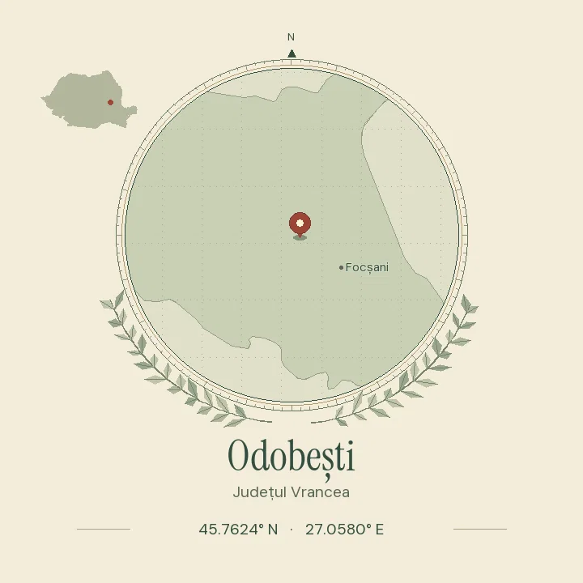
Hartă ilustrată Odobești · Cramă
crama dobrev
Cramă mică din Odobești, Vrancea, cu 13 evaluări și media 4,7. Nu e sală de nunți, dar poate furniza vin local; iată ce să întrebi.
Strada Teilor 8, 625300 Odobești+40 744 573 775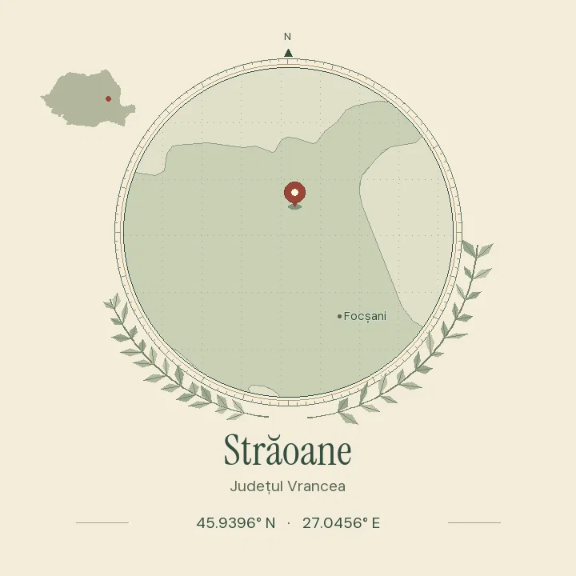
Hartă ilustrată Străoane · Cramă
Casa de vinuri Crucianu
Casa de vinuri Crucianu. O cumpărătoare venită la Străoane înainte de Paște povestește că a putut gusta vinul înainte să se hotărască ce ia acasă.
Str. Eroilor, 627325 Străoane+40 744 606 098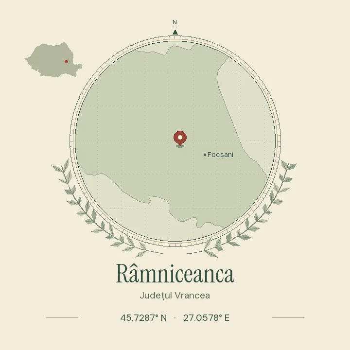
Hartă ilustrată Râmniceanca · Reper cultural
Conac Râmniceanca Vîrteșcoiu, Vrancea
Conac Râmniceanca Vîrteșcoiu, Vrancea, Râmniceanca. Conacul din Râmniceanca apare și în arhiva Monumente Uitate.
DJ205B 1, Râmniceanca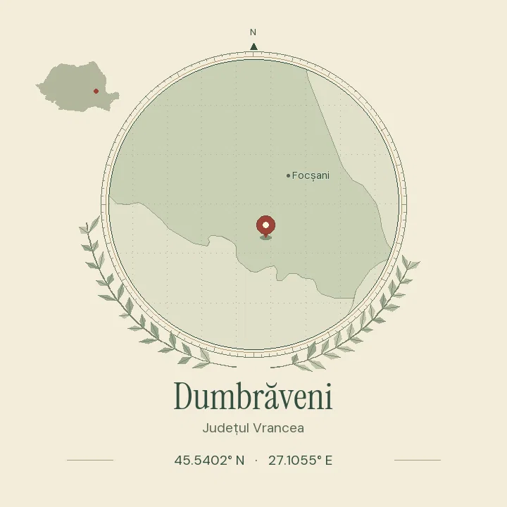
Hartă ilustrată Dumbrăveni · Restaurant
Petit Château
Petit Château, Dumbrăveni. Pentru o petrecere pe terasa din Dumbrăveni, cereți să ascultați cum se aude de la masă o probă de sonorizare.
Dumbrăveni+40 767 202 711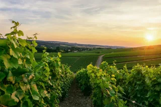
Fotografie a locației · Sursa fotografiei Focșani · Cramă
Crama Tata și Fiul
Cramă de familie pe Calea Moldovei, Focșani, cu livrare online; 4,5 din 31 de evaluări. Utilă ca furnizor de vin pentru nuntă.
Calea Moldovei 35, 620158 Focșani+40 237 220 341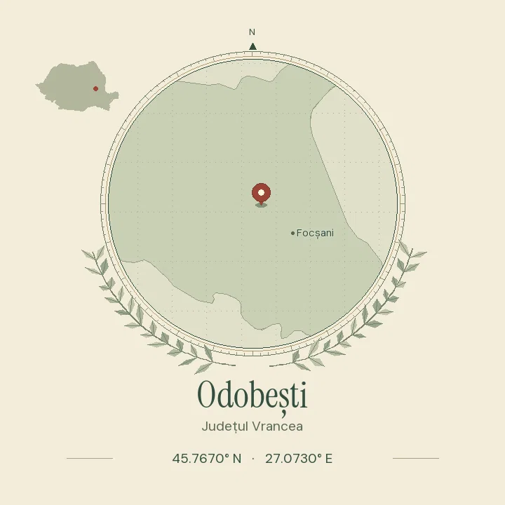
Hartă ilustrată Odobești · Producător
Crama Odobesti S.C. Beciul Domnesc S.A.
Crama Odobesti S.C. Beciul Domnesc S.A.. În Odobești, numele producătorului și locul unde își primește vizitatorii trebuie verificate separat.
Strada Nicolae Iorga 1, 625300 Odobești+40 237 239 447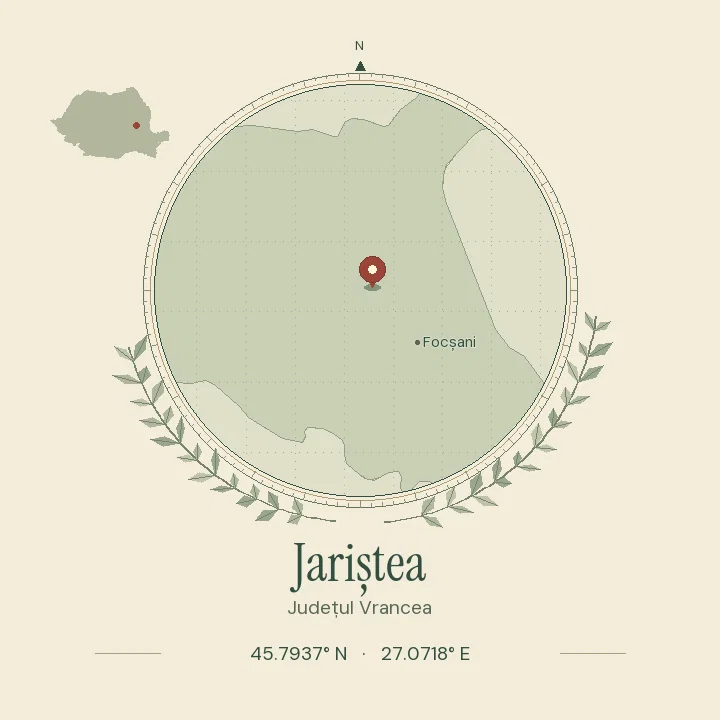
Hartă ilustrată Jariștea · Cramă
Crama Preduțoiu
Cramă mică în Jariștea, Vrancea, cu 7 evaluări pe Google și vinuri lăudate pentru preț. Ce să întrebi despre degustări și vin pentru nuntă.
Strada Ion Saragea 37, 627180 Jariștea+40 744 382 550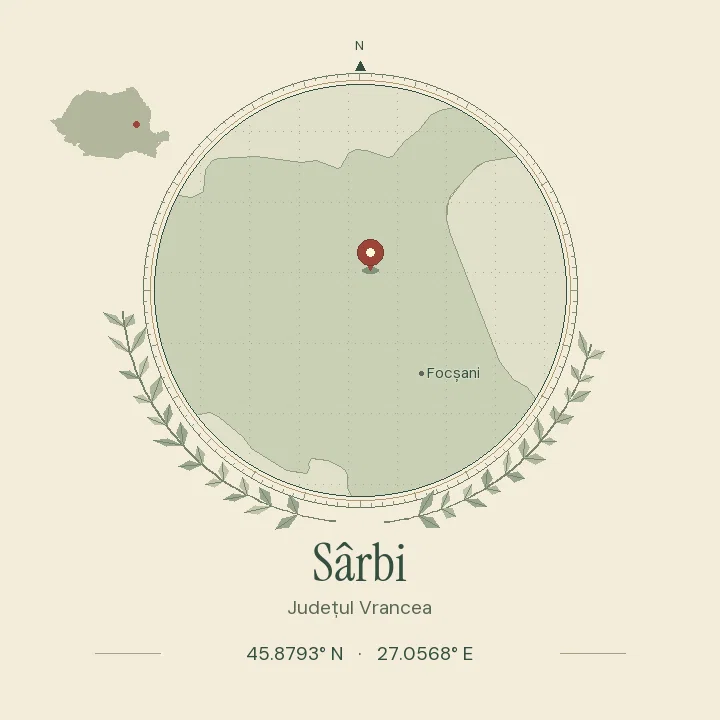
Hartă ilustrată Sârbi · Stațiune
Domeniile Panciu
O recenzie de la Domeniile Panciu descrie o seară în care un eveniment privat a coincis cu dificultăți la servirea cinei pentru ceilalți oaspeți.
627382 Sârbi+40 735 207 671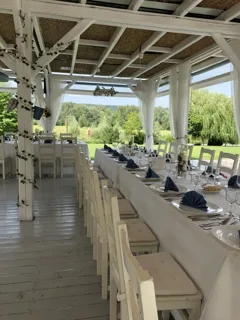
Fotografie a locației · Sursa fotografiei Vităneștii de sub Măgură · Bed & Breakfast
Pensiunea Leonardo
Pensiunea Leonardo, Vităneștii de sub Măgură. Oaspetele care a așteptat la Leonardo spune că a cerut ajutorul a doi ospătari înainte să i se ia comanda.
DN2D, 627041 Vităneștii de sub Măgură+40 723 049 004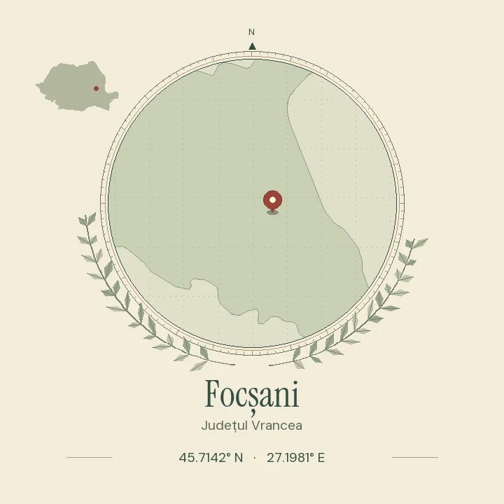
Hartă ilustrată Focșani · Cramă
Crama Stanciu
Un client al Cramei Stanciu apreciază raportul dintre preț și calitate și amintește de nuntași mulțumiți, fără să spună unde a avut loc petrecerea lor.
Calea Moldovei, 620152 Focșani+40 766 680 771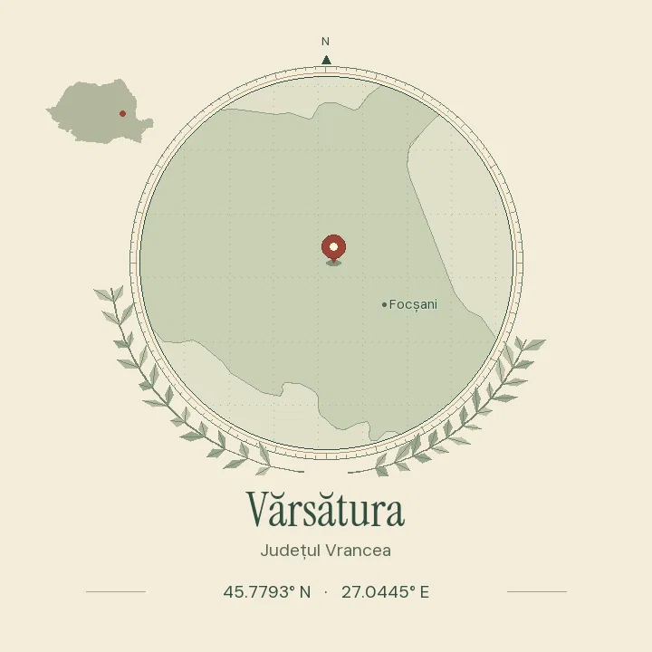
Hartă ilustrată Vărsătura · Cramă
Crama Sarba Odobesti
Cramă din Vărsătura, Vrancea, cunoscută pentru soiul Șarba și Băbeasca Neagră. Fără date despre evenimente: ce să întrebi.
Strada Emil Nica, Vărsătura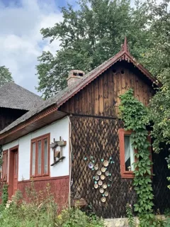
Fotografie a locației · Sursa fotografiei Soveja · Pensiune
Pensiunea Elena Soveja
Pensiunea Elena Soveja, Soveja. Oaspeții care recomandă pensiunea din Soveja amintesc spațiul camerelor și atmosfera calmă.
DN2L, 627320 Soveja+40 728 222 601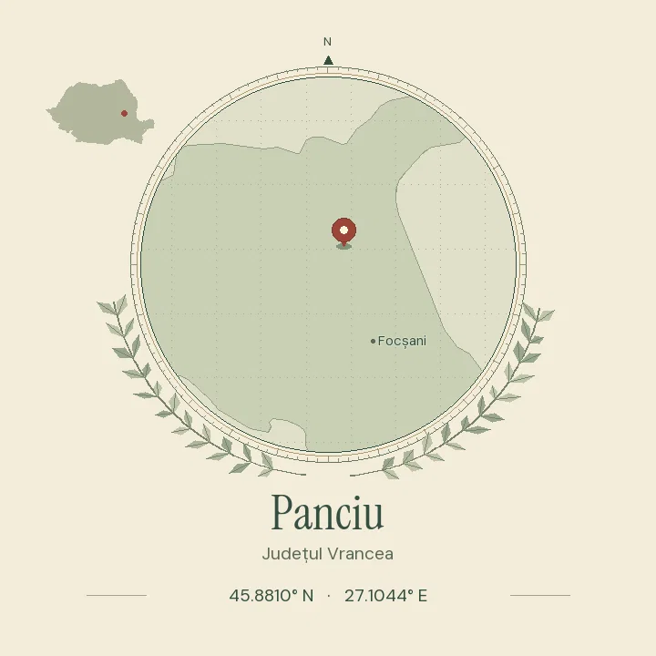
Hartă ilustrată Panciu · Cramă
Cramele Panciu
Cramele Panciu. Într-o relatare apare și numele ghidului, Sandra, detaliu care vorbește despre o întâlnire propriu-zisă cu cineva din echipă.
625403 Panciu+40 749 300 361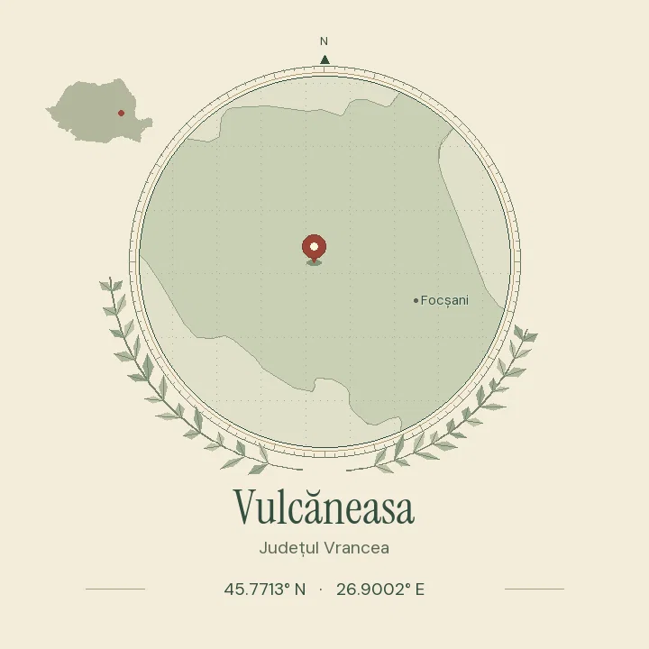
Hartă ilustrată Vulcăneasa · Pensiune
Pensiunea Tara
Dacă faceți un weekend în Vrancea cu rude din alte orașe, includeți podul în indicațiile de sosire și discutați din timp câte persoane pot lua masa împreună.
Sat Vulcaneasa, com. Mera, 627204 Vulcăneasa+40 766 571 486
Întrebări despre locațiile din județul Vrancea
Unde pot dormi invitații în județul Vrancea?
În registrul de cazare SITUR găsim Pensiunea Cocoș (2 locuri de cazare), Casa Budisteanu (22 de locuri de cazare), Pensiunea Oscar (22 de locuri de cazare). Verifică ce camere sunt libere pentru noaptea evenimentului.
Ce proprietăți din județul Vrancea au grădină sau terasă?
Pensiunea Cocoș (terasă, foișor); Casa Budisteanu (terasă); Petit Château (terasă). Cere administratorului condițiile de folosire pentru o petrecere privată.
Care locație din județul Vrancea are cele mai multe evaluări Google?
Domeniile Panciu Winery and Resort are 1.463 de evaluări în profilul Google folosit la documentare. Evaluările acoperă și alte experiențe la proprietate, inclusiv vizitele fără eveniment.
Unde apare o intrare accesibilă în județul Vrancea?
Profilurile Google indică o intrare accesibilă la Crama Gîrboiu, MOȘIA DOMNEASCĂ, Crama Odobesti S.C. Beciul Domnesc S.A.. Pentru o cununie în exterior, cere detalii despre traseul dintre intrare și zona cu scaune.